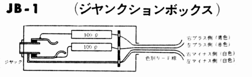
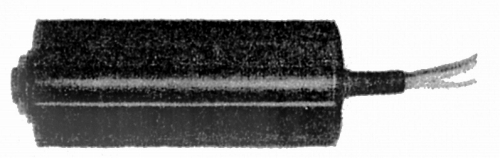
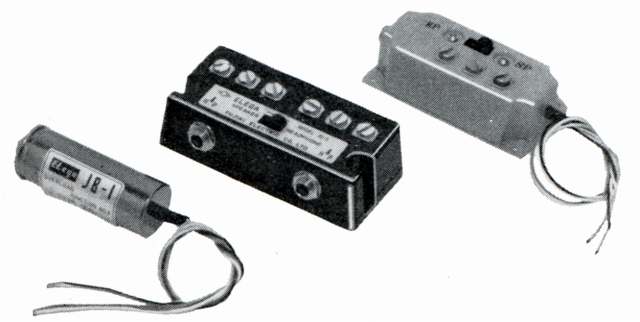
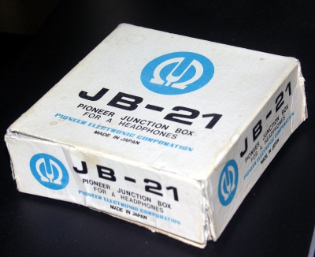
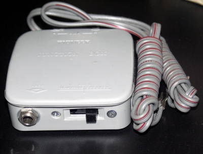

ジャンクションボックス
JB-1


DR-59C、60C、61Cなど1960年代初頭のまだヘッドフォン端子があまり普及していなかった時期の製品のオプションパーツ。
アンプのスピーカー端子に抵抗を介し接続するアダプターで、ヘッドフォン本体と+400円でセットで販売されていた。
ただ接続するだけのJB-1の他、スピーカーとの切替が可能なJB-3、5もあったようだ。

(左からJB-1、3、5）
同様の製品は、パイオニア等1960年代からヘッドフォンに力を入れていたメーカーに存在する。
 
（パイオニアのJB-21。スピーカーとの切替機能のあるタイプ 管理人所有機）